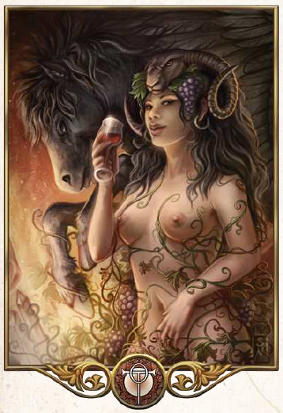

"Ohne die Schönheit und die Freude daran wäre das ganze Leben auf dieser Welt sinnlos. Doch die Welt ist schön, so haben die Götter es gefügt, also lasst uns feiern."
Aspekte: Freude, Liebe, Rausch, Lust, Schönheit
Symbole/Wahrzeichen: Weinrebe, Rose
Heiliges Tier: Stute
Die heitere Göttin ist Rahja, die Göttin der Ekstase und der körperlichen Liebe. Sie liebt den Rausch und den Tanz und gilt als Schutzherrin Liebender, des Weins und aller Feste. Sie wird von Verliebten und hoffnungsfrohen Künstlern ebenso verehrt wie von Zechern aller Altersstufen. Die sittenstrengen Traviapriester beobachten das Tun der Rahjageweihten oftmals mit großen Misstrauen und tun sie schnell als leichtfertig ab. Ganz Unrecht mögen sie damit nicht haben, aber die leichtgekleideten Rahjapriester handeln durchaus verantwortungsvoll, auch wenn sie den Gläubigen dabei deutlich weniger Fesseln anlegen als andere Kulte.
Die Stute gilt als Inbegriff von Anmut und Lebenslust und steht daher unter dem Schutz der Göttin. Besonders in den Weinbaugebieten Almadas und des Horasreichs wird Rahja hoch verehrt. In den Tulamidenlanden herrscht eine mystischere Glaubensausrichtung vor. Dort werden besonders der Rausch und die göttliche Ekstase zu Ehren der Leidenschaftlichen zelebriert. Der Haupttempel des Kultes, Sitz der Geliebten der Göttin, steht in